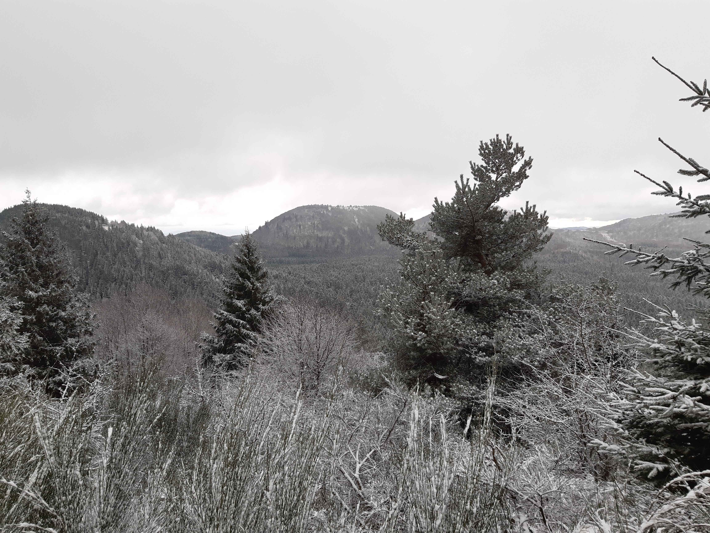

Description de l'itinéraire : le Péage - suquet Bonnet - col de Ceyssat - puy de Dôme - chemin des Gravouses
Distance : 10 km
Dénivelé positif : 500 m
Point le plus bas : 910 m
Point le plus haut : 1458 m
Cotation en l'absence de neige : T2
Intérêt : 3/5
Date : entre autres le 10/8/2024
Photos : aucune
Tour du puy de Dôme
Type : boucle
Description de l'itinéraire : le Péage - suquet Bonnet - col de Ceyssat - puy de Dôme - chemin des Gravouses
Distance : 10 km
Dénivelé positif : 300 m
Point le plus bas : 920 m
Point le plus haut : 1125 m
Cotation en l'absence de neige : T1
Intérêt : 1/5
Date : ?
Photos : aucune
GR89 de Clermont-Ferrand au puy de Dôme
Type : aller simple
Description de l'itinéraire : GR89 de la gare de Clermont-Ferrand au chemin des Gravouses puis pied du puy de Dôme
Distance : 15 km
Dénivelé positif : 1200 m
Point le plus bas : 358 m
Point le plus haut : 1458 m
Cotation en l'absence de neige : T2
Intérêt : 3/5
Date : 8/7/2022, en aller-retour
Photos :
Le puy de Dôme vu depuis Clermont-Ferrand
Traversée de Clermont-Ferrand par le GR300
Type : aller simple
Description de l'itinéraire : GR300 de Blanzat à la ferme de Gergovie
Distance : 20 km
Dénivelé positif : 600 m
Point le plus bas : 368 m
Point le plus haut : 608 m
Cotation en l'absence de neige : T1
Intérêt : 1/5
Date : fait en deux fois au printemps 2023
Photos : aucune
Puy Pariou
Type : boucle
Description de l'itinéraire : parking des Goules - Fraisse - puy Pariou
Distance : 6 km
Dénivelé positif : 300 m
Point le plus bas : 975 m
Point le plus haut : 1209 m
Cotation en l'absence de neige : T2
Intérêt : 3/5
Date : ?
Photos : aucune
Puy des Goules et grotte du Sarcoui
Type : boucle
Description de l'itinéraire : parking des Goules - grotte du Sarcoui - puy des Goules
Distance : 5 km
Dénivelé positif : 200 m
Point le plus bas : 975 m
Point le plus haut : 1146 m
Cotation en l'absence de neige : T2
Intérêt : 2/5
Date : ?
Photos : aucune
Puys de Jume, de la Coquille et des Gouttes
Type : boucle
Description de l'itinéraire : parking sur la D576 - puy de Jume - puy de la Coquille - puy des Gouttes - Beauregard
Distance : 15 km
Dénivelé positif : 500 m
Point le plus bas : 876 m
Point le plus haut : 1152 m
Cotation en l'absence de neige : T2
Intérêt : 2/5
Date : entre autres, 6/1/2024 et 27/10/24 (sans passer par le puy des Gouttes)
Photos :
Sculpture de Thierry Courtadon Vue sur le chaîne des Puys
Puy de Louchadière
Type : boucle
Description de l'itinéraire : parking sur la D576 - puy de Louchadière - Taillis rouges
Distance : 7 km
Dénivelé positif : 300 m
Point le plus bas : 899 m
Point le plus haut : 1198 m
Cotation en l'absence de neige : T2
Intérêt : 2/5
Date : entre autres, 3/11/24
Puys de Lassolas, de la Vache et de Vichatel
Type : boucle
Description de l'itinéraire : maison du Parc des volcans - puy de Lassolas - piy de la Vache - col de la Ventouse - puy de Vichatel
Distance : 11 km
Dénivelé positif : 500 m
Point le plus bas : 950 m
Point le plus haut : 1183 m
Cotation en l'absence de neige : T2
Intérêt : 3/5
Date : ?
Photos :
Vue sur le Sud de la chaîne des Puys et le massif du Sancy depuis le puy de la Vache
Puy de la Combegrasse et narse d'Espinasse
Type : boucle
Description de l'itinéraire : parking sur la 983 - puy de la Combegrasse - les Chazelles - Espinasse - les Sagnes - Chamadoux
Distance : 10 km
Dénivelé positif : 200 m
Point le plus bas : 990 m
Point le plus haut : 1110 m
Cotation en l'absence de neige : T1
Intérêt : 3/5
Date : entre autres, 11/5/2024
Photos :
La chaîne des PuysLes monts Dore
Gorges d'Enval
Type : boucle
Description de l'itinéraire : Enval - gorges d'Enval - point à 685 m - point à 668 m - point à 602 m
Distance : 9 km
Dénivelé positif : 400 m
Point le plus bas : 457 m
Point le plus haut : 668 m
Cotation en l'absence de neige : T2
Intérêt : 2/5
Date : 13/4/2024 et 14/4/2024
Photos :
Le château de Tournoël
Méandre de Queuille
Type : boucle
Description de l'itinéraire : Queuille - Montfaucon - point à 616 m - pré l'Étang - puy Gibert - point de vue du Chagot - Queuillette - pré l'Étang - Queuille - point de vue du méandre de Queuille